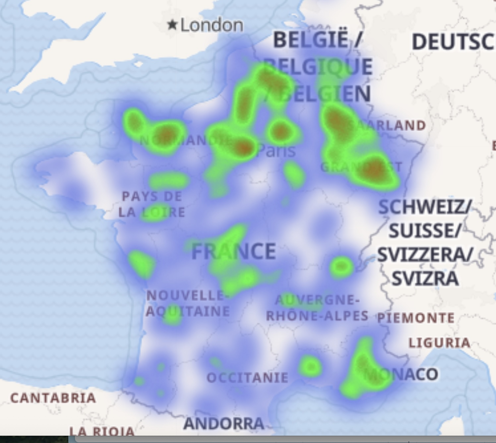

1 Le patronyme Ambroise
Malgré les réserves légitimes de ma petite femme, Martine Gutmann épouse Ambroise, qui voit dans la transmission patronymique un héritage du patriarcat millénaire défavorable aux femmes, cette recherche doit bien choisir un point d’ancrage pour commencer. En ce sens, la lignée Ambroise s’impose, non par supériorité, mais parce qu’elle constitue un terrain d’étude culturellement plus accessible et documenté pour moi.
1.1 Une note personnelle
Pendant longtemps, jusqu’à l’âge de 56 ans, j’étais convaincu que notre patronyme Ambroise provenait d’un prénom attribué à un enfant abandonné. D’après ce que j’avais saisi des récits généalogiques rapportés par ma grand-mère Marie-Thérèse Ambroise, née Anchier, mon arrière-grand-père aurait été orphelin et placé, ignorant l’identité de ses parents. Cette interprétation s’est révélée erronée. Les recherches qui suivent démontrent au contraire qu’Ambroise constitue un patronyme ancestral aux origines solidement établies.
1.2 De l’origine du patronyme Ambroise
Le patronyme Ambroise a une origine latine et chrétienne. Il dérive du prénom latin “Ambrosius”, qui signifie “immortel” ou “divin” (du grec “ambrosios”, faisant référence à l’ambroisie, la nourriture des dieux dans la mythologie grecque). Ce nom a été popularisé principalement grâce à saint Ambroise de Milan (vers 340-397), l’un des quatre Pères de l’Église latine et docteur de l’Église catholique. Il était évêque de Milan et une figure majeure du christianisme primitif, connu pour son éloquence et son influence sur saint Augustin. Le patronyme Ambroise s’est répandu dans les pays de tradition chrétienne, particulièrement en France, où il est devenu un nom de famille transmis héréditairement. On le trouve aussi sous différentes variantes selon les régions et les langues : Ambrosio en italien et espagnol, Ambrose en anglais, ou encore des formes dérivées comme Ambroix, Ambrosi, etc.
1.3 Répartition géographique du patronyme Ambroise
Géographiquement, ce patronyme est présent dans toute la France, mais avec une concentration historique plus marquée dans certaines régions où le culte de saint Ambroise était particulièrement développé.
1.3.1 Communes les plus présentes pour le patronyme Ambroise
| Commune | Département | Nombre d’individus |
|---|---|---|
| Paris | Paris | 2159 |
| Francastel | Oise | 1031 |
| Somme (diverses communes) | Somme | 1983 |
| Doullens | Somme | 879 |
| Beauval | Somme | 422 |
| Dun-sur-Meuse | Meuse | 952 |
| Bazailles | Meurthe-et-Moselle | 530 |
| Merviller | Meurthe-et-Moselle | 438 |
| Mirecourt | Vosges | 517 |
| Calvados (diverses communes) | Calvados | 505 |
| Pont-de-l’Arche | Eure | 884 |
| Deux-Villes | Ardennes | 417 |